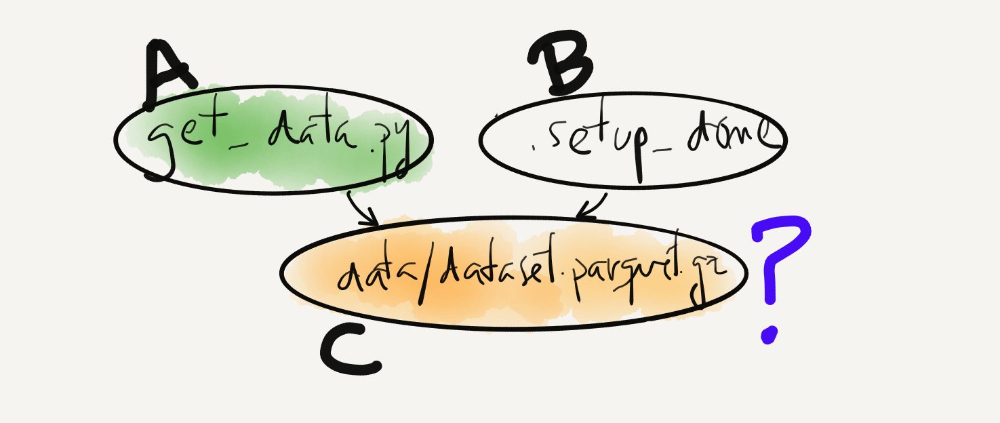
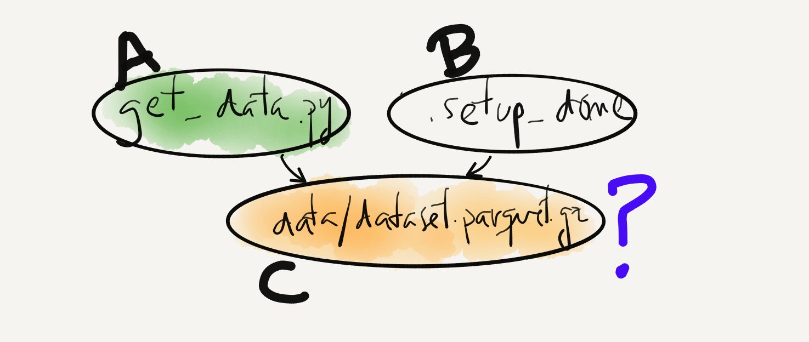

2. Simple automation with Make¶
2.1. Makefiles¶
2.1.1. Make “Hello World!”¶
# Create a file called `Makefile` and write these 2 lines
hello.txt:
echo "Hello world!" > hello.txt
> make hello.txt
echo "Hello world!" > hello.txt
> cat hello.txt
Hello world!
GNU Make is a build tool
Makefile contains targets as a collection of recipes
make runs the targets we select
2.1.2. Make concepts¶
# recipe for `target_1`
target_1: dependencies_1
task_1
...
# recipe for `target_N`
target_N: target_1 target_5
task_N
Each entry in the Makefile is a recipe
Simple syntax: target: dependencies
Both targets and dependencies are considered files
Recipes define a DAG between targets and dependencies
 

{kind=link}
(assuming both parents exist)
If C exists –> check if its timestamp is < or > than that of its parents. If “<”, run C, else pass.
If C doesn’t exist –> run C.
.setup_done: environment.yml
conda env create --force -f environment.yml
mkdir -pv data
touch .setup_done
Some tasks don’t generate files (ex: conda env create)
sentinel files are used to create recipes in this case
.setup_done is the sentinel file in the example
We may be tempted to add targets such as this one:
train: data/model.tar.gz
- which would not work if there happen to be a train file in your working directory. .PHONY targets
avoid this potential problem:
.PHONY: train
train: data/model.tar.gz
And now make knows that train is always out-of-date.
2.1.3. Using variables¶
We can define variables within a Makefile
DATA_FOLDER = data/
ARTEFACT_PATH = $(DATA_FOLDER)/model.tar.gz
.PHONY: train
train: $(ARTEFACT_PATH)
We can even define them in a separate file and include them:
include Makefile.conf # Filename is irrelevant
.PHONY: train
train: $(ARTEFACT_PATH)
where Makefile.conf would contain the variable definition
A very useful feature are variables that can be passed as command-line arguments:
DATA_FOLDER ?= data/ # Notice the "?" before the "="
ARTEFACT_PATH = $(DATA_FOLDER)/model.tar.gz
.PHONY: train
train: $(ARTEFACT_PATH)
And now we can do, for example
> make train DATA_FOLDER=/tmp/data
2.1.4. Dry-run: seeing the execution plan¶
# Simple example Makefile
.setup_done:
touch .setup_done
data.gz: .setup_done
# `$@` below is a "special" variable with the name of the target
touch $@
model.gz: data.gz
touch $@
# This will not run the targets but will show you the execution plan
> make model.gz --dry-run
2.1.5. Parallel execution¶
.setup_done:
touch .setup_done
data_1.gz: .setup_done
touch $@
data_2.gz: .setup_done
touch $@
model.gz: data_1.gz data_2.gz
touch $@
# The order of execution might vary but it always respects the DAG
> make model.gz --jobs 2
2.1.6. Make gotchas¶
Sometimes make’s behavior can be a bit puzzling…
Stops on errors, but by default doesn’t remove generated targets
Directories are treated like files
Multiple targets imply multiple invokations
2.1.7. Using Make with conda¶
Since Make spawns a new shell, we need to explicitly use the python from our conda env:
# replace with your conda root folder:
CONDA_ROOT = /Users/arnau.tibau/miniconda3/
ENV_NAME = ml_in_prod
PIP = $(CONDA_ROOT)/envs/$(ENV_NAME)/bin/pip
PYTHON = $(CONDA_ROOT)/envs/$(ENV_NAME)/bin/python
.setup_done:
# let's simulate us having our own package
echo "from setuptools import setup; setup()" > setup.py
# Installs our package in the desired environment
$(PIP) install -e .
touch .setup_done
model.gz: data.gz
# Runs the script under the right environment
$(PYTHON) my_training_script.py data.gz
2.1.8. Quizz I¶
What would this recipe do?
A B: C D
touch A
echo "B" > B
This is not valid syntax
It would generate two files (A and B) if C OR D’s state changes since last execution
It would generate two files (A and B) if C AND D’s state changes since last execution
A wonderful seafood rice
2.1.9. Quizz I: solution¶
What would this recipe do?
A B: C D
touch A
echo "B" > B
This is not valid syntax
b) It would generate two files (A and B) if C *OR* D’s state changes since last execution
It would generate two files (A and B) if C AND D’s state changes since last execution
A wonderful seafood rice
2.1.10. Quizz II¶
Do these two Makefiles have the same behavior when you run make all?
# Makefile #1
A B: C
touch A
touch B
all: A B
# Makefile #2
A: C
touch A
B: C
touch B
all: A B
2.1.11. Quizz II: solution¶
Do these two Makefiles have the same behavior when you run make all? No!
# Generates A and B whenever C changes
A B: C
touch A
touch B
all: A B
# Generates A or B whenever C changes, depending
# on whether A or B are up-to-date
A: C
touch A
B: C
touch B
all: A B
2.1.12. Practice time¶
Write a Makefile with at least:
1. A setup target that creates a conda environment from the Yaml file we created in last chapter’s Practice time and runs the corresponding test_env.py
A clean target that removes the created environment
BONUS: Read and try your luck with Pattern Rules
You can find inspiration in the capstone project Makefile
2.1.13. Practice time (solution)¶
A setup target that creates a conda environment […]
SHELL := bash
.ONESHELL: # instructs make to use the same shell within a recipe
.SHELLFLAGS := -eu -o pipefail -c # a few recommended shell flags
ENV_NAME ?= practice_env
CONDA_ROOT =? /Users/arnau.tibau/miniconda3/
PYTHON = $(CONDA_ROOT)/envs/$(ENV_NAME)/bin/python
.setup_done: environment.yml
echo "Creating and testing environment"
conda env create --force -f environment.yml -n $(ENV_NAME)
$(PYTHON) test_env.py
touch .setup_done
.PHONY: setup
setup: .setup_done
A clean target that removes the created environment
.PHONY: clean
clean: .setup_done
echo "Cleaning up environment $(ENV_NAME)..."
conda env remove -n $(ENV_NAME)
rm .setup_done
BONUS: Read and try your luck with Pattern Rules
# let's download a couple files
download_data:
wget https://www.w3.org/TR/PNG/iso_8859-1.txt http://humanstxt.org/humans.txt
# this will generate a .words file for each .txt file
%.words : %.txt
# the `$<` variable refers to the dependency
# the `$@` variable refers to the target
cat $< | wc -w > $@
CODE = "import sys;print(sum(int(open(v).read()) for v in sys.argv[1:]))"
summary : iso_8859-1.words humans.words
python -c $(CODE) $(wildcard *.words) > $@